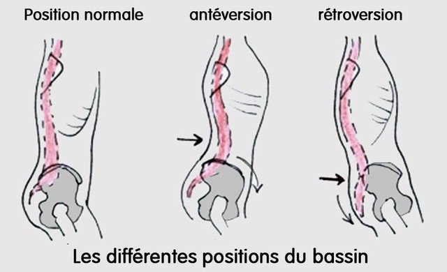

La stabilité au pistolet
Le corps, l’arme, le regard et le mental : tout ce qui permet de garder l’arme alignée jusqu’au départ du coup, à l’entraînement comme en match.
Les composantes de la stabilité
En tir sportif, la stabilité repose sur l’équilibre postural, la prise en main de l’arme, la respiration et la maîtrise du lâcher. Ces composantes limitent les mouvements parasites pour maintenir l’arme alignée sur la cible jusqu’au départ du coup. Et le mental les relie toutes.
La stabilité mécanique au pistolet
Au pistolet, notamment à une main en précision (10 m, 25 m), la stabilité dépend avant tout d’une posture profilée verrouillée et d’un tonus musculaire minimal. Contrairement à la carabine, aucun appui secondaire : c’est l’alignement du squelette qui porte l’arme.
Pour aller plus loin : se placer face à la cible, chausser sa crosse, le bouger et la zone d’acceptation.
La rétroversion du bassin
La rétroversion du bassin consiste à basculer légèrement le pubis vers l’avant et le haut, en contractant doucement abdominaux et fessiers, pour effacer la cambrure du bas du dos. Au pistolet, c’est un réglage postural fondamental pour verrouiller la colonne et empêcher le buste de tanguer.

Le bol d’eau
Imaginez votre bassin comme un bol rempli d’eau à ras bord :
- Cambré (antéversion) : le bol penche en avant, l’eau déborde devant (fesses en arrière, reins creusés).
- Neutre : le bol est horizontal.
- Rétroversion : le bol bascule vers l’arrière ; le pubis remonte vers le nombril, le coccyx rentre vers le bas.
Pourquoi c’est utile
- Empiler les segments osseux : jambes, bassin et colonne s’alignent verticalement, au lieu de creuser les reins pour compenser le poids du pistolet.
- Verrouiller le centre de gravité : le bas et le haut du corps forment un bloc, qui limite le tangage avant-arrière.
- Protéger le dos : sur un match de 60 coups, effacer la cambrure évite douleurs et fatigue lombaire, qui dégradent la tenue en fin de match.
La ressentir : le test du mur
- Debout, dos et talons collés contre un mur.
- Passez une main dans le creux entre le bas du dos et le mur : elle passe facilement.
- Contractez doucement le bas des abdominaux et serrez légèrement les fesses pour plaquer le bas du dos contre le mur et écraser votre main. C’est la rétroversion.
Ce sont les abdominaux qui tirent l’avant du bassin vers le haut, les fessiers et l’arrière des cuisses qui tirent l’arrière vers le bas ; les lombaires, elles, se relâchent.
La mettre en place sans se crisper
- Verrouillez d’abord les genoux, sans forcer l’articulation vers l’arrière.
- Rentrez légèrement le coccyx, comme pour effacer le creux des reins contre un mur imaginaire.
- Dosez l’effort : un gainage doux, environ 20 à 30 % de contraction. Trop fort, vous bloquez la respiration et tremblez.
- Gardez les épaules basses : la cage thoracique et l’épaule tireuse ne remontent pas.
Le piège : ne confondez pas rétroversion et pencher le buste en arrière. Le bassin bascule sur place ; le contrepoids se fait ensuite d’un seul bloc, à partir des chevilles et des hanches.
Les 5 erreurs les plus fréquentes
| Erreur | Conséquence | Correction |
|---|---|---|
| Contracter trop fort (l’effet « béton ») | Respiration abdominale bloquée, pouls qui monte, micro-tremblements | Un gainage doux, 20 à 30 % de force : le bassin est maintenu, pas verrouillé |
| Fléchir les genoux | Les cuisses portent le poids : fatigue rapide, tremblements verticaux | Jambes tendues, sans hyperextension, avant la bascule |
| S’affaisser (enrouler le haut du dos) | Épaules en avant, cage thoracique fermée, épaule tireuse désalignée | Le bassin bascule, le sternum reste ouvert, la tête droite comme tirée par un fil |
| Pousser le bassin vers l’avant | Poids sur la pointe des pieds, mollets qui compensent sans cesse | Une rotation sur place, pas une translation ; poids 50/50 talons et avant-pieds |
| Forcer malgré une raideur | Lutte musculaire interne qui fatigue les lombaires | Effacer 70 à 80 % de la cambrure suffit ; pas de dos plat obtenu en force |
La tête et le regard
La vision est le premier capteur postural : ce que vous fixez, et la manière de le faire, influencent directement l’immobilité de l’arme. La tête, elle, pèse 4 à 5 kg : la moindre inclinaison déplace le centre de gravité et perturbe l’oreille interne. La règle d’or : c’est l’arme qui monte devant l’œil, jamais la tête qui descend chercher la visée.
La position de la tête
- Rotation pure : une fois de profil, tournez seulement la tête vers la cible, comme pour dire « non ». Si ça tire sur le cou, ouvrez un peu la position (75 à 80°).
- Zéro inclinaison : ni vers l’épaule tireuse, ni menton rentré ; le visage reste vertical, parallèle au mur de la cible.
- L’arme vient à l’œil : tête droite, regard horizontal, l’œil regarde droit devant lui dans son orbite, pas en coin.
Le cache-œil translucide
Un cache translucide (blanc laiteux, jamais noir) sur l’œil qui ne vise pas laisse passer la lumière : les deux pupilles restent dilatées de la même façon, le guidon est plus net et la fatigue diminue. On n’a plus à plisser l’œil fermé, ce qui supprime des tensions dans le visage et le cou.
Trois erreurs fréquentes
| Erreur | Conséquence | Correction |
|---|---|---|
| Pencher la tête vers l’épaule | Déséquilibre latéral, oreille interne perturbée : oscillations gauche-droite | Garder les deux oreilles à la même hauteur |
| Avancer ou baisser le menton | Tension dans la nuque et le trapèze, l’épaule tireuse monte, tremblements | Imaginer un fil qui tire le sommet du crâne vers le plafond |
| Bouger la tête entre deux coups | Distance œil-guidon et lumière dans la hausse qui changent : dispersion | Garder la tête tournée vers la cible pendant le chargement, ou reprendre le même repère à chaque levée |
Pour aller plus loin : la visée en détail, le regard sur le guidon, la gymnastique des yeux.
Le mental au service de la stabilité
Le mental agit directement sur la stabilité physique : il règle le tonus musculaire, le rythme cardiaque et la qualité du lâcher. Chaque pensée ou émotion modifie aussitôt la tension de la nuque, de la mâchoire et la mobilité des yeux.
Pour aller plus loin : cohérence cardiaque et respiration, rester dans le présent, l’annonce.
La stabilité en compétition
En match, la gestion mentale de la stabilité consiste à neutraliser la montée d’adrénaline et à isoler chaque tir du score. Le stress fait monter le rythme cardiaque, qui fait pulser l’arme dans la main, et provoque une crispation inconsciente sur la crosse.
Avant le match
- Cohérence cardiaque, 5 minutes avant l’appel : inspirez 5 secondes par le nez, expirez 5 secondes par la bouche.
- Les essais pour les sensations, pas pour les points : épaule basse, poids 50/50, pression fluide.
Pendant le match
- Un match à un coup : ne comptez jamais vos points, ne vous projetez pas sur la fin.
- Le sas entre deux tirs : posez l’arme, détournez le regard, grande inspiration, relâchez la main. Ce rituel coupe le lien avec le coup précédent, 10 ou 7.
- Pensée parasite (« je suis bien parti ») : reposez, respirez, reprenez la routine à zéro.
Les moments critiques
Les premiers coups de match : le passage des essais au match crée un pic de tension. Acceptez un bougé un peu plus large, ne forcez pas, soyez encore plus rigoureux sur la routine.
La fin de match : la fatigue pousse à « finir vite » ou à bloquer la respiration plus longtemps. Gardez le même rythme, et reposez dès que la visée dépasse 5 à 6 secondes.
S’entraîner sous pression
Tirez des séries de 10 coups avec un objectif strict (par exemple 90/100 minimum, ou aucun impact hors du 9). Objectif manqué : on recommence la série. Cela reproduit la tension du match et apprend à garder un geste stable malgré l’enjeu.
Le sentiment de fuite
L’envie soudaine d’abréger la visée, d’« expédier » le tir ou de finir au plus vite est une défense naturelle face au stress. Elle détruit la patience musculaire, accélère la respiration et transforme le lâcher en coup de doigt. On la reconnaît au déclenchement brusque dès que le guidon passe près du 10, aux coups enchaînés sans pause, ou au bras baissé avant la fin du coup.
Pourquoi la cible change le geste
Sur un mur blanc, les automatismes gèrent l’équilibre. Dès qu’une cible apparaît, l’esprit veut « placer » le coup : on passe d’un relâchement naturel à un contrôle conscient et rigide. Le cerveau mesure en permanence l’écart avec le 10 et interprète chaque oscillation comme une faute à corriger ; quand le guidon passe au centre, il veut « capturer » l’instant et commande un coup de doigt. La cible matérialise réussite et échec : le geste devient un test de sa valeur.
Pour résister à ce sur-contrôle, ne luttez pas contre vos pensées : occupez votre attention avec une tâche purement sensorielle.
Pour aller plus loin : la check-list du compétiteur, ne pensez pas à l’ours blanc, lâcher sans déstabiliser l’arme.
Les trois piliers de la stabilité
Check-list et plans d’entraînement
Check-list : avant d’entrer sur le pas de tir
À relire 5 minutes avant l’appel :
- Souffle : 3 cycles lents, 5 secondes d’inspiration, 5 secondes d’expiration.
- Appuis : pieds parallèles, largeur des épaules, poids 50/50, orientation vérifiée les yeux fermés.
- Relâchement : épaule tireuse basse, mâchoire desserrée, prise de crosse haute et constante.
- Regard : net sur le guidon, jamais sur la cible.
- Règle d’or : un coup à la fois, zéro calcul de points, repose obligatoire si la visée dépasse 5 secondes.
Plan hebdomadaire : 3 séances
| Séance | Objectif | Contenu | Durée |
|---|---|---|---|
| 1 · Maison, à sec | Stabilité mécanique et lâcher | Tenue sur mur blanc : 3 séries de 10 levées (6 s en visée, 15 s de repos). Tir à sec : 20 lâchers, attention sur l’immobilité du guidon au départ. | 25 min |
| 2 · Stand | Stabilité technique | Échauffement : 10 coups sur carton blanc. Timing : 30 coups, repose à la moindre hésitation ou au-delà de 5 s. Annonce de chaque impact avant de regarder. | 1 h |
| 3 · Stand | Stabilité mentale | Simulation de match : 15 min d’essais puis 40 ou 60 coups en conditions réelles. Finir par 10 coups avec objectif (aucun hors du 9, sinon on recommence). | 1 h 15 |
Complément physique : 10 minutes de gainage et d’équilibre sur un pied, deux fois par semaine, pour renforcer le tronc et les chevilles.
Plan modulable : mur blanc, SCATT et stand (2 à 4 séances)
| Séance | Support | Objectifs et exercices | Durée |
|---|---|---|---|
| 1 · Base | Maison : mur blanc | Endurance posturale : 15 levées (6 s de tenue, 15 s de repos) ; 20 tirs à sec sur le relâchement de l’épaule et la fluidité de l’index. | 20 min |
| 2 · Base | Stand : carton et cible | 10 coups sur carton blanc pour le groupement naturel ; 40 coups avec la règle des 5 secondes et annonce systématique. | 1 h |
| 3 · Si 3 séances | SCATT | Longueur de tracé dans la dernière seconde : réduire la vitesse du guidon dans le 9-10. Lâcher : pas de décrochage dans les 0,2 s avant le départ. | 30 min |
| 4 · Si 4 séances | Stand : match | Match complet (40 ou 60 coups) avec la routine : cohérence cardiaque au départ, sas entre chaque coup, zéro calcul. | 1 h 15 |
Le mur blanc développe les sensations internes (équilibre, tonus, lâcher) sans que l’œil soit attiré par le visuel ou le résultat. Le SCATT sert de loupe objective une fois par semaine : taille de la zone de bougé, coups de doigt invisibles à l’œil nu.
Pour aller plus loin : SCATT : lire ses erreurs de tir, stabilité et attention sur carton blanc, mesurer et améliorer sa stabilité, les levées d’arme.
MonTirSportif – https://pistol.montirsportif.com/la-stabilite.html